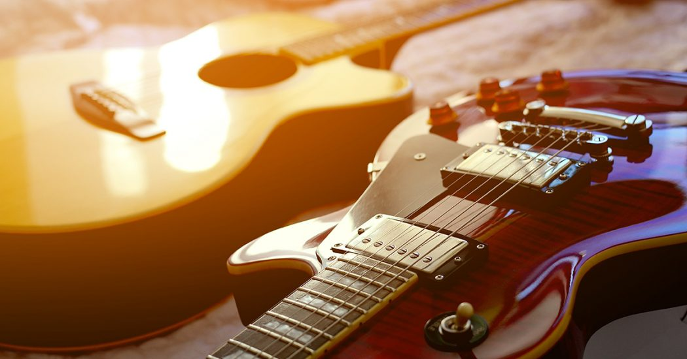

After a long day's work or at some point during the weekend I sometimes like to become a couch potato along with my girlfriend. Recently we watched the movie "Old" by Shamalan and we are currently watching "After Life" by Ricky Gervais.
One of the activities I like the most is going for a ride on my Kawasaki Versys. I love touring the lanscapes of my beautiful country with my girlfriend, or going out with the boys on our motorcycles at night. I also love cars and anything with an engine in it, really.

Although I don't have as much time as I would like (you know, being an adult and all that boring stuff), I try to make the time to enjoy some pc gaming. I mostly like difficult, action packed, story rich games. Recently I got to level 100 in Diablo IV and currently I am playing Lies of P.
I have the goal to learn at least 3 new skills every year. For 2024 the plan is to learn web development, achieve proficiency Italian, and learn some guitar.
